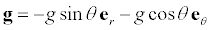
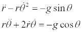
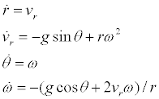

In order to solve for the trajectory of a particle undergoing constant acceleration, we express Newton's second law F=ma in component form. Near Earth's surface, the force of gravity is constant and produces a constant downward acceleration g of 9.8 m/s2. In polar coordinates the acceleration vector g can be expressed in terms of the angle coordinate q and the polar coordinate unit vectors er and eq as
.
Setting the acceleration components equal to the kinematic radial and tangential acceleration expressions produces two coupled second order differential equations
.
These second order differential equations are easy to solve by defining vr and w variables for the first derivatives of r and q, respectively. The equations can now be written a system of four coupled first order differential equations.

These equations are expressed as code on the Ejs Evolution workpanel.